1. What the server does
The server keeps many WebSocket connections open. A client sends an event. The server finds the handler for that event. The handler can send events to one connection, to a room, or to all connections.
2. The hard problem
Most connections are idle at any moment. A chat room can have one million members. Perhaps ten members speak each second. The other 999,990 members only listen.
The server must hold one million connections in a small memory space. The server must not reserve a thread, a stack, or a big buffer for each idle connection.
3. The design you knew
The old branch had good ideas. A subscriber had a file descriptor, an ID, and a list of rooms. A room held a map of subscribers. A broadcast walked the map and wrote to each subscriber. Each subscriber had its own goroutine for reading.
The old branch had these costs:
| Old part | Cost for each connection |
|---|---|
Subscriber.Capture goroutine |
About 8 KiB of stack |
| Per-subscriber buffer | Up to the buffer size |
| Room key by file descriptor | The kernel can reuse the number |
| One frame copy for each receiver | One allocation for each receiver |
| One callback per I/O operation | One more function call on each step |
The old branch also sent text frames. The new server sends binary frames only.
4. The new design in one picture
The server has three layers. The facade is the public API. The slices own the features. The kernel owns the Linux primitives. A dependency points down. A lower layer never uses a higher layer.
5. Idea 1: One loop owns many connections
A loop is one OS thread with one io_uring ring. The loop owns a fixed set of connections. All work for a connection runs on its own loop. No goroutine exists for each connection.
The old model started a new goroutine after each read. The new model keeps one goroutine for the whole loop.
One loop on one core runs one handler at a time. For this reason, a handler must not block. A blocking handler stops every connection on that core.
6. Idea 2: A connection has a safe name
The old code used the file descriptor as the identity. The kernel can close a descriptor and give the same number to a new socket. A late message can then go to the wrong connection.
The new code uses two numbers. The slot is the position in a table. The generation increases each time the server reuses the slot. A message for an old connection fails the generation check.
The public handle is small: a server pointer, a slot, and a generation. The server checks the pair on every call.
7. Idea 3: Every send goes through a room
A room is a named group of connections. A Self-Room is the private room of one connection. The Self-Room is implicit. The server does not store a member list for it. The Self-Room costs zero bytes.
This is your old idea. Your branch called JoinRoom(id, s) with the session ID.
The new server makes the Self-Room a first-class target.
A unicast send is an Emit to one Self-Room. A room send is an Emit to one named room. A broadcast is an Emit to all open connections. All three paths use one engine.
8. Idea 4: Encode one time. Share the frame.
A fan-out sends the same bytes to many connections. The server encodes the frame one time. The frame has a reference count. Each loop takes one reference. The frame returns to the pool when the last loop releases it.
Each connection also has a write queue. The queue is bounded by messages and by
bytes. A full queue returns ErrBackpressure. The server does not block and
does not drop without a signal.
9. Idea 5: Ask and answer with an ACK
A request can ask for an answer. The request carries a request ID. The peer sends an ACK with the same ID. The server calls your callback one time: on the ACK, on a timeout, or on an error.
The server binds the request to the connection that made it. A different connection cannot answer it with a guessed ID. The timeout uses the loop timer wheel. The server does not create a timer for each request.
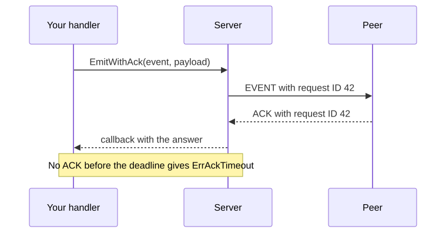
10. The journey of one message
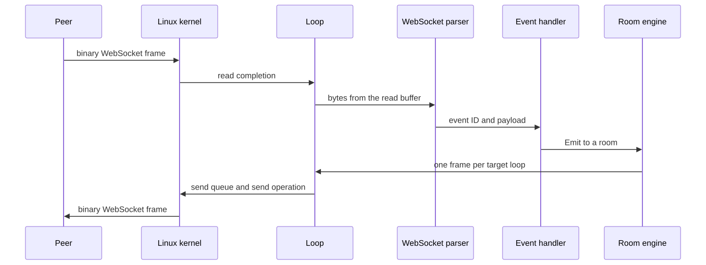
The payload is borrowed. It is valid only during the handler call. The server returns the read buffer to the pool after the handler returns.
11. Old words and new words
| Old branch | New server | What it means |
|---|---|---|
Subscriber |
Conn |
The handle for one connection |
fd |
ConnID{Slot, Gen} |
The safe name of a connection |
StartUp(n) |
New(Config) |
Create the server |
On["chat"] |
On(1024, handler) |
Bind a handler to a numeric event ID |
sub.Send(data) |
c.Emit(event, data) |
Send to this connection |
EmitDirect(sub, event, data) |
c.Emit(event, data) |
The same, through the Self-Room |
Emit(event, data, "room") |
srv.To("room").Emit(event, data) |
Send to a room |
Broadcast(event, data) |
srv.Broadcast(event, data) |
Send to all connections |
AddToRoom(sub, name) |
c.Join(name) |
Join a room |
RemoveFromRoom(sub, name) |
c.Leave(name) |
Leave a room |
GetRoomMembers(name) |
srv.RoomSize(name) |
Count the members |
sub.Metadata |
Conn fields and rooms |
Per-connection data |
One goroutine per Capture |
One loop per core | Who waits for the network |
| Text frames | Binary frames | The wire format |
| One frame per receiver | One shared frame | Fan-out cost |
| Room map keyed by fd | Sharded directory keyed by Ref |
Room storage |
xsync.Map |
Sharded maps with locks | Concurrency style |
12. Your ideas that survived
The rewrite does not reject your design. It keeps the important ideas and removes the costs.
The server also changes three costs: no goroutine for each connection, no buffer for each idle connection, and no frame copy for each receiver.
13. How to read the code
Read the code in this order:
docs/protocol.mdfor the 16-byte envelope.internal/connection/slab.gofor the slot and the generation.internal/room/directory.goandselfroom.gofor rooms.internal/connection/writeq.gofor the bounded queue.internal/reactor/loop_linux.goand the other*_linux.gofiles for the loop.
14. Rules you must obey
- A handler must not block. It runs on a loop thread. A blocked handler stops every connection on that core.
- A payload is borrowed. Do not keep it after the handler returns. Copy it first if you need it later.
- Check the
Emiterror. A full queue returnsErrBackpressureunder the default policy. - Use the Self-Room for a unicast send. Use a named room for a group send.
- Do not use a stale
ConnID. The generation check protects the server, but a stale ID cannot reach a live connection.
15. Small glossary
| Term | Meaning |
|---|---|
| ACK | The envelope that confirms a request |
| Envelope | The first 16 bytes of a message |
| Event ID | The number that selects a handler |
| Facade | The public package that users import |
| Frame | One encoded WebSocket message |
| Generation | The number that makes a reused slot safe |
| Loop | One thread with one io_uring ring |
| Ring | The io_uring submission and completion queues |
| Self-Room | The implicit room of one connection |
| Slice | One package that owns one feature |
| Slot | The position of a connection in the table |
| Write queue | The frames that wait for the socket |
16. Measured results
These numbers come from the M2 report. The host is an 8 vCPU, 15.6 GiB Linux virtual machine. The kernel is 6.8. The Go version is 1.27.2.
| Test | Result |
|---|---|
| 1,000,000 idle connections | 1,000,000 open, zero errors |
| Memory for each idle connection | 0.392 KiB |
| 1M echo run | 1,886,007 in, 1,886,007 out |
| Echo allocation | 0 bytes per operation |
| 8k Self-Room echo | 546,374 messages per second |
| Struct size: slot | 192 bytes |
The 60-minute hold and the 1M-member room fan-out are still open. See
docs/benchmarks/ for the raw data and the commands.